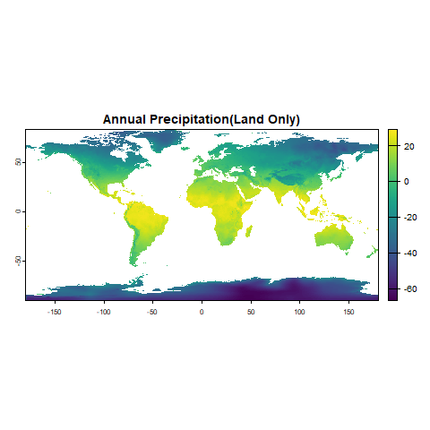

Show Me the Script
library(terra)
library(geodata)
library(rnaturalearth)
library(rgbif)
library(ggplot2)
library(rnaturalearthdata)
library(dismo)
library(sf)
library(rJava)
library(raster)GEO511 Final Project
Takakia (Figure 1) was discovered in the Himalayas in 1861. It is the oldest known extant genus of land plants, estimated to have branched off the other mosses around 390 million years ago. Takakia has rapidly evolving genes and is highly sensitive to environmental changes, particularly to temperatures during the growing season. Based on 20 years of monitoring Takakia on the Tibetan Plateau, scientists have discovered that due to climate change, including glacier melt and rising annual average temperatures, this species is facing the risk of extinction in the region. This highlights the urgent need for an effective conservation plan for Takakia.
However, due to Takakia’s small size and its primary growth between rocks, it is difficult to discover. Most research on Takakia focuses on the genetic response of Takakia to environmental changes. There is lack of studies that focus on distribution of Takakia on a global scale.
In this project, I aim to address this gap by utilizing global environmental data to predict suitable growing areas for Takakia worldwide. I hope that the results of the project will provide a reference for the establishment of conservation areas for Takakia in the future and the selection of Ex-situ conservation location.

| Data / Source | Description / Link |
|---|---|
| World Takakia occurrences record | Global Biodiversity Information Facility(GBIF) |
| Takakia field samples | Field study |
| Historical climate data | 19 Bioclimatic variables |
I used the above data to predict the global spatial distribution of Takakia using the Maximum Entropy(MaxEnt) method in R. The specific implementation code is as follows:
library(terra)
library(geodata)
library(rnaturalearth)
library(rgbif)
library(ggplot2)
library(rnaturalearthdata)
library(dismo)
library(sf)
library(rJava)
library(raster)1. Setup and Download Environmental data
# Specify the download path
download_path <- "E:/UB_Master/24fall/GEO511 Spatial/Final_project/Final_Project"
# Download elevation data (Elevation)
elevation <- worldclim_global(var = "elev", res = 2.5, path = download_path)
# Download Bioclimatic variables data
# WorldClim Bioclimatic variables (typically from bio1 to bio19)
bioclimatic_vars <- worldclim_global(var = "bio", res = 2.5, path = download_path)
# Check and visualize Bioclimatic variables data
print(bioclimatic_vars)
plot(bioclimatic_vars[[1]], main = "Bio1: Annual Mean Temperature")
# Combine the elevation data and Bioclimatic variables into one raster stack
climate_stack <- c(elevation, bioclimatic_vars)
# Check and visualize the merged raster stack
print(climate_stack)
plot(climate_stack[[1]], main = "Global Elevation")2. Crop and Mask Raster Stack for Land Areas

# Download global land shapefile
land <- ne_download(scale = "medium", type = "land", category = "physical", returnclass = "sf")
# Crop and mask raster stack to include only land areas
climate_stack_cropped <- crop(climate_stack, ext(land))
climate_stack_land <- mask(climate_stack_cropped, vect(land))
# Visualize the results
plot(climate_stack_land[[12]], main = "Annual Precipitation(Land Only)")3. Prepare Takakia Occurrence Data
# Define the species name
species_name <- "Takakia S.Hatt. & Inoue"
# Retrieve occurrence data
gbif_data <- occ_search(scientificName = species_name, limit = 2000)
# Extract longitude and latitude from the data
occurrences <- data.frame(
lon = gbif_data$data$decimalLongitude,
lat = gbif_data$data$decimalLatitude
)
# Remove rows with missing coordinates
occurrences_clean <- na.omit(occurrences)
# Remove duplicate coordinates
occurrences_unique <- occurrences_clean[!duplicated(occurrences_clean), ]
# Check the number of unique points
cat("Number of unique occurrence points:", nrow(occurrences_unique), "\n")
# Load world map for background
world_map <- ne_countries(scale = "medium", returnclass = "sf")
# Plot unique occurrence points
ggplot() +
geom_sf(data = world_map, fill = "lightgray", color = "black") +
geom_point(data = occurrences_unique, aes(x = lon, y = lat), color = "red", size = 1) +
theme_minimal() +
labs(title = "Unique Distribution Points of Takakia S.Hatt. & Inoue",
x = "Longitude",
y = "Latitude")
# Save the unique occurrence data to a CSV file
write.csv(occurrences_unique, "Takakia_Unique_Distribution_Data.csv", row.names = FALSE)4. MaxEnt Model for Takakia Distribution Prediction
options(java.parameters = "-Xmx8g")
selected_env_stack <- climate_stack_land
# Ensure occurrences_unique is an sf object with coordinates
occurrences_sf <- st_as_sf(occurrences_unique, coords = c("lon", "lat"), crs = crs(selected_env_stack))
# Convert SpatRaster to RasterStack (if it's not already in stack format)
selected_env_stack <- stack(selected_env_stack)
# Extract coordinates from the sf object
occurrences_matrix <- as.matrix(st_coordinates(occurrences_sf))
# Extract environmental values at occurrence points
env_values <- extract(selected_env_stack, occurrences_matrix)
# Combine occurrences with extracted environmental data
occ_with_env <- cbind(occurrences_matrix, env_values)
# Remove rows with NA predictor values
occ_with_env <- na.omit(occ_with_env)
# Separate cleaned occurrences and predictor values
occurrences_matrix_clean <- occ_with_env[, 1:2] # First two columns are longitude and latitude
# Train the MaxEnt model (with all variables)
maxent_model <- maxent(
x = selected_env_stack,
p = occurrences_matrix_clean
)
# Summary of the model
summary(maxent_model)
# Predict the current distribution
current_distribution <- predict(maxent_model, selected_env_stack)
# Visualize the prediction
plot(current_distribution, main = "Predicted Current Distribution of Takakia")
# Save the predicted distribution as a GeoTIFF file
writeRaster(current_distribution, filename = "Takakia_Current_Distribution.tif", overwrite = TRUE)
# Split data into training and testing sets
set.seed(123)
train_indices <- sample(1:nrow(occurrences_matrix), size = 0.75 * nrow(occurrences_matrix))
train_data <- occurrences_matrix[train_indices, ]
test_data <- occurrences_matrix[-train_indices, ]
# Evaluate the model
eval <- evaluate(maxent_model, p = train_data, a = test_data, x = selected_env_stack)
print(eval)
# Plot the receiver operating characteristic (ROC) curve
plot(eval, "ROC")
# Perform Jackknife to evaluate the importance of each environmental variable
# Use the 'maxent' model with jackknife = TRUE
jackknife_results <- dismo::maxent(
x = selected_env_stack,
p = occurrences_matrix_clean,
jackknife = TRUE
)
# Extract Jackknife results from the 'maxent' object using the appropriate method
# Jackknife results are contained in the model object itself, accessible by using the 'maxent' method:
jackknife_importance <- jackknife_results@results
# Display the Jackknife importance values for each variable
print(jackknife_importance)Model Evaluation
X.Training.samples 158.0000
Regularized.training.gain 2.9615
Unregularized.training.gain 3.1286
Iterations 500.0000
Training.AUC 0.9798
X.Background.points 10158.0000
Annual Mean Temperature. contribution 16.2349
Mean Temperature of Warmest Quarter. contribution 1.4220
Mean Temperature of Coldest Quarter. contribution 0.0000
Annual Precipitation. contribution 2.8552
Precipitation of Wettest Month. contribution 5.6789
Precipitation of Driest Month. contribution 26.9568
Precipitation Seasonality. contribution 1.5024
Precipitation of Wettest Quarter. contribution 0.0479
Precipitation of Driest Quarter. contribution 0.8141
Precipitation of Warmest Quarter. contribution 1.0436
Precipitation of Coldest Quarter. contribution 10.4287
Mean Diurnal Range. contribution 20.0025
Isothermality (BIO2/BIO7) (×100). contribution 1.0616
Temperature Seasonality. contribution 2.9947
Max Temperature of Warmest Month. contribution 2.6196
Min Temperature of Coldest Month. contribution 0.0764
Temperature Annual Range (BIO5-BIO6). contribution 5.0906
Mean Temperature of Wettest Quarter. contribution 0.2649
Mean Temperature of Driest Quarter. contribution 0.1747
Global Elevation. contribution 0.7306

My project utilized environmental variables to predict the potential global distribution of Takakia. The results indicated that Annual Mean Temperature, Precipitation of the Driest Month, and Mean Diurnal Range were the most influential environmental variables affecting the distribution of Takakia. However, during the experiment, I noticed that the AUC values of the model’s predictions were not ideal. Despite trying various methods to improve the AUC, the results fluctuated between 0.501 and 0.520 without significant improvement. So far, I am still exploring ways to enhance the model’s predictive accuracy. I suspect that two factors might be limiting the model’s performance:1，The resolution of environmental variables. 2，The correlations among environmental variables. In the future, I will continue working on addressing these two issues and strive to improve the model’s accuracy.
1.Hattori, S., Iwatsuki, Z., Mizutani, M., & Inoue, S. (1974). Speciation of Takakia. The Journal of the Hattori Botanical Laboratory, 38, 115-121.
2.Hu, R., Li, X., Hu, Y., Zhang, R., Lv, Q., Zhang, M., … & He, Y. (2023). Adaptive evolution of the enigmatic Takakia now facing climate change in Tibet. Cell, 186(17), 3558-3576.
3.Elith, J., & Leathwick, J. R. (2009). Species distribution models: ecological explanation and prediction across space and time. Annual review of ecology, evolution, and systematics, 40(1), 677-697.
4.Takakia. In Wikipedia. Retrieved December 5, 2024, from https://en.wikipedia.org/wiki/Takakia.